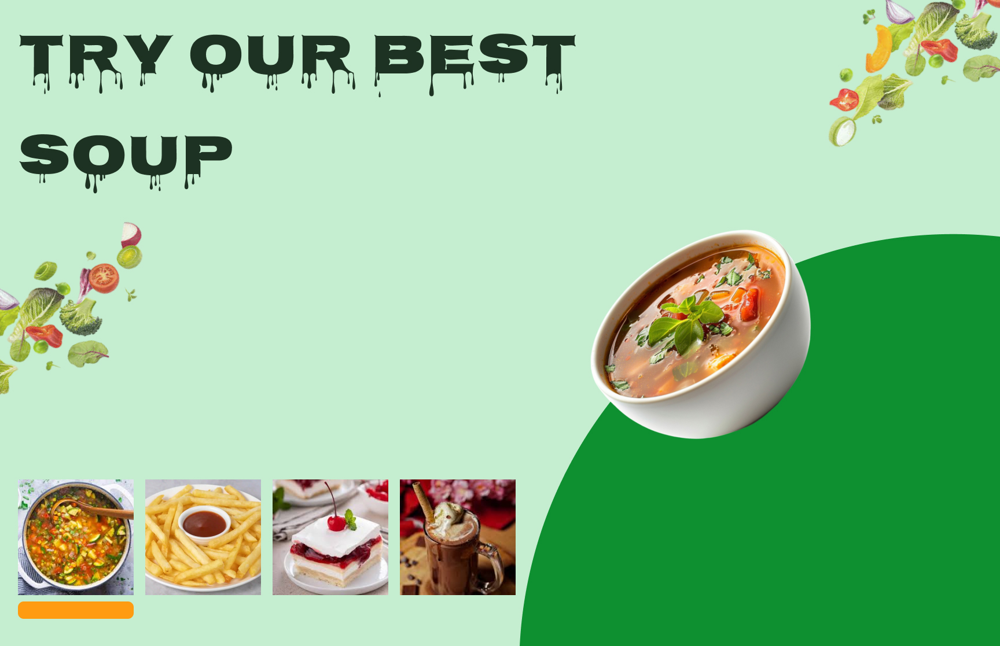
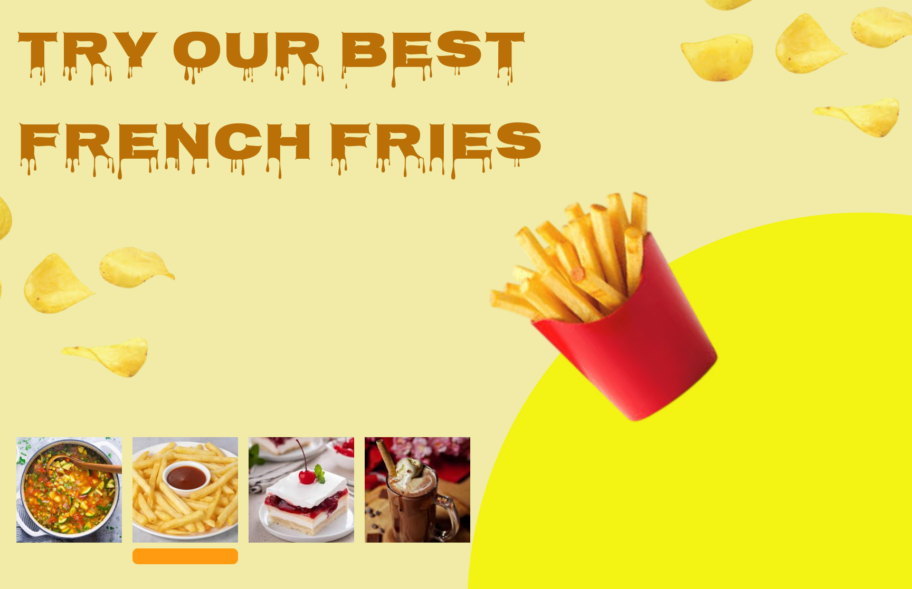
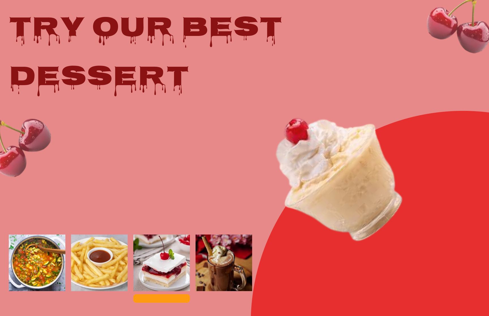
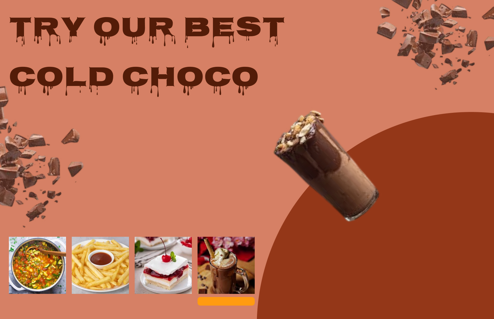

Food Promotion Animation is a visually engaging motion design project created in Figma. The animation showcases food products through smooth transitions, appealing visuals, and modern promotional layouts designed to capture user attention.
UI/UX Designer & Motion Designer
Figma
To create an eye-catching food promotion animation that enhances visual storytelling and improves user engagement through motion design.




The final animation delivers a vibrant and engaging promotional experience that effectively showcases food products while maintaining a modern and visually appealing design. The project successfully combines motion design principles with food marketing to create compelling content.